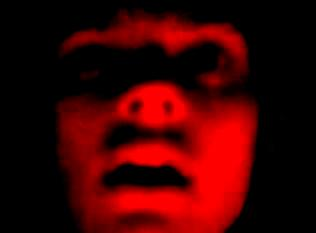

Fortes rumores indicam uma nova seqüência para "A Casa do Calafrio". O quarto filme iria se chamar
"O Quarto do Calafrio" e apresentaria novos fatos e personagens. O diretor da série, Cristiano Balzan,
afirmou com exclusividade para "A Casa do Calafrio Fansite" que o roteiro realmente existe: "Tivemos
uma idéia sensacional que leva a série para uma nova direção, mas sem abandonar os fatos antigos
que caracterizam a casa, e agora o quarto." Ele quis dizer o quarto dela! E o quarto filme também! Ele conta que a
personagem principal se chama Laura e que é filha da Vovózona Nimbas (que será interpretada por
Leila Cravos, numa participação especial). Jezebel e Mário Tarântula também mostraram interesse
em voltar mas não há confirmação de suas participações. "Trabalhar com Cristiano é um prazer", afirmam.
Novos atores farão parte da sequência, trazendo assim novas situações totalmente inesperadas.
"Ainda não há nenhum nome cogitado para fazer o papel principal de Laura, mas em breve serão
abertos testes", afirma o diretor. Estamos todos aguardando ansiosamente que esse sonho se torne
realidade. Aguarde por mais novidades!